Học máy
Bài 4a: Tổng quát hoá
Trường ĐH Công nghệ – Đại học Quốc gia Hà Nội
Nội dung
1.
Phương pháp
tập kiểm định
Đánh giá tổng quát hoá?
- Quá-khớp (overfitting): lỗi train thấp, lỗi test cao.
- Dưới-khớp (underfitting): lỗi cao trên cả hai tập.
- Lỗi train không phản ánh hiệu năng thực tế.
Câu hỏi: Ước lượng lỗi trên tập kiểm tra khi không có thêm dữ liệu?
Giải pháp: tách dữ liệu hiện có thành tập huấn luyện và tập kiểm định.
Đánh giá tổng quát hoá?
- Đánh giá tổng quát hoá: kiểm tra mô hình trên dữ liệu khác tập huấn luyện.
- Cách đơn giản nhất: chia ngẫu nhiên thành hai tập:
- Tập huấn luyện (training set): khớp mô hình.
- Tập kiểm định (validation set): ước lượng lỗi tổng quát hoá.
Đánh giá tổng quát hoá?
Ví dụ: chia 50–50 ngẫu nhiên trên \(n\) mẫu.
Ví dụ: Dùng tập kiểm định
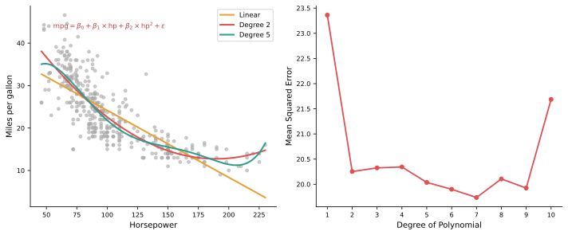
Lỗi trên tập kiểm định cho một lần chia ngẫu nhiên 50–50.
Sử dụng tập kiểm định
Quan sát:
- Lỗi kiểm định biến động lớn theo cách chia.
- Bậc 2 cải thiện rõ rệt.
- Bậc cao hơn không mang lại lợi ích.
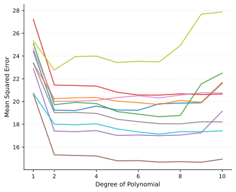
Mỗi đường là một lần chia 50–50 ngẫu nhiên khác nhau.
Sử dụng tập kiểm định
Hai vấn đề khi dùng 1 tập kiểm định:
- Phương sai cao — phụ thuộc phép chia ngẫu nhiên.
- Tập huấn luyện nhỏ → mô hình học từ ít dữ liệu hơn → lỗi trên tập kiểm định có thể bị ước lượng cao hơn thực tế.
→ Cần dùng dữ liệu hiệu quả hơn: Kiểm định chéo.
Mỗi đường là một lần chia 50–50 ngẫu nhiên khác nhau.
2.
Kiểm định chéo (Cross-Validation)
Leave-One-Out Cross-Validation (LOOCV)
Ý tưởng: mỗi lần giữ lại một điểm để kiểm định.
- Train trên \(n-1\) mẫu → ít độ chệch.
- Kiểm định trên 1 điểm → phương sai cao.
- Mỗi điểm được kiểm định đúng một lần.
- Lấy trung bình lỗi của tất cả \(n\) lần.
- Kết quả không phụ thuộc vào phép chia ngẫu nhiên.
\(k\)-fold Cross-Validation
- Chia dữ liệu thành \(k\) fold.
- Train trên \(k-1\) fold.
- Kiểm định trên 1 fold.
- Mỗi fold được kiểm định đúng một lần.
- Lỗi CV là trung bình lỗi của \(k\) lần: \( \text{CV}_{(k)} = \frac{1}{k}\sum_{i=1}^{k}\text{MSE}_i \)
- Thường dùng \(k = 5\) hoặc \(k = 10\).
- LOOCV là trường hợp \(k = n\).
- Nhanh hơn LOOCV; độ chệch nhỉnh hơn.
■ Tập kiểm định ■ Tập huấn luyện
\(k\)-fold CV — Giảm phương sai
- Phương pháp tập kiểm định: phụ thuộc vào một lần chia dữ liệu.
- \(k\)-fold CV: ổn định hơn vì lấy trung bình trên nhiều fold.
- Lặp lại \(k\)-fold CV nhiều lần giúp giảm phương sai thêm.
- Thực tế thường dùng 10-fold CV.
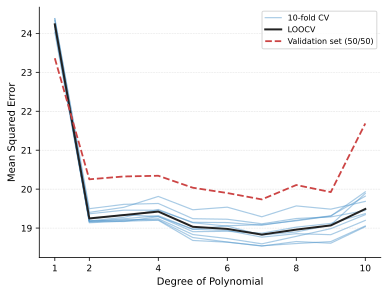
Minh hoạ: 10-fold CV lặp lại trên 10 phép chia ngẫu nhiên.
Ví dụ: Dữ liệu gần tuyến tính

Ví dụ: Dữ liệu phi tuyến vừa
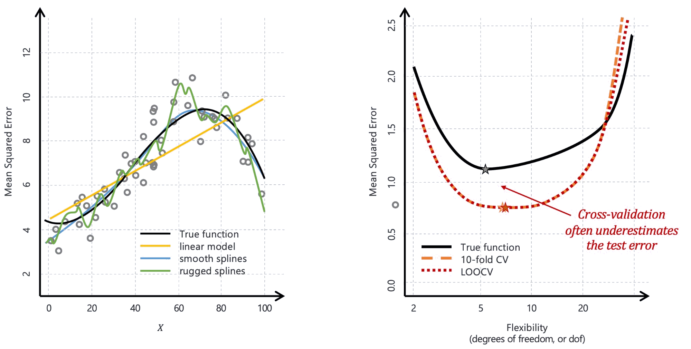
Ví dụ: Dữ liệu phi tuyến mạnh
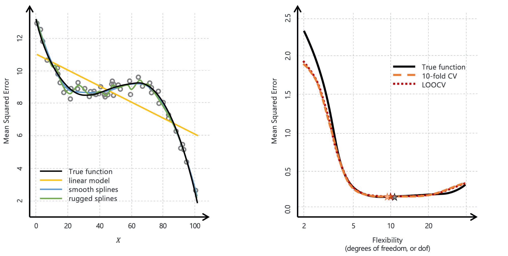
\(k\)-fold CV — Chọn mô hình tối ưu
- Mục tiêu: chọn độ phức tạp phù hợp.
- Lỗi CV dao động nên cực tiểu không luôn rõ ràng.
- CV cho ta cả lỗi trung bình và độ lệch chuẩn.
- Nhiều mô hình có chất lượng gần như nhau.
Quy tắc 1-SE: chọn mô hình đơn giản nhất nằm trong phạm vi 1 sai số chuẩn quanh mô hình tốt nhất.

\(k\)-fold CV — Chọn mô hình tối ưu
- Mục tiêu: chọn độ phức tạp phù hợp.
- Lỗi CV dao động nên cực tiểu không luôn rõ ràng.
- CV cho ta cả lỗi trung bình và độ lệch chuẩn.
- Nhiều mô hình có chất lượng gần như nhau.
Quy tắc 1-SE: chọn mô hình đơn giản nhất nằm trong phạm vi 1 sai số chuẩn quanh mô hình tốt nhất.
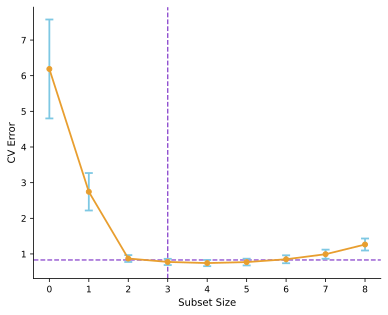
Subset size = số biến được giữ lại trong mô hình.
Độ chệch – Phương sai của \(k\)-fold CV
- LOOCV: các tập huấn luyện gần như giống hệt nhau.
- Vì vậy, lỗi giữa các lần kiểm định có tương quan cao (\(\rho \approx 1\)).
- \(k\)-fold CV: các tập huấn luyện khác nhau nhiều hơn.
- Do đó, ước lượng lỗi thường có phương sai thấp hơn.
Đây là công thức phương sai của trung bình \(k\) lỗi kiểm định khi các lỗi này có tương quan \(\rho\).
- \(\rho\) càng lớn thì phương sai càng lớn.
- Với LOOCV, \(\rho \to 1\) nên số hạng đầu chiếm ưu thế.
Ví dụ: CV cho Phân lớp
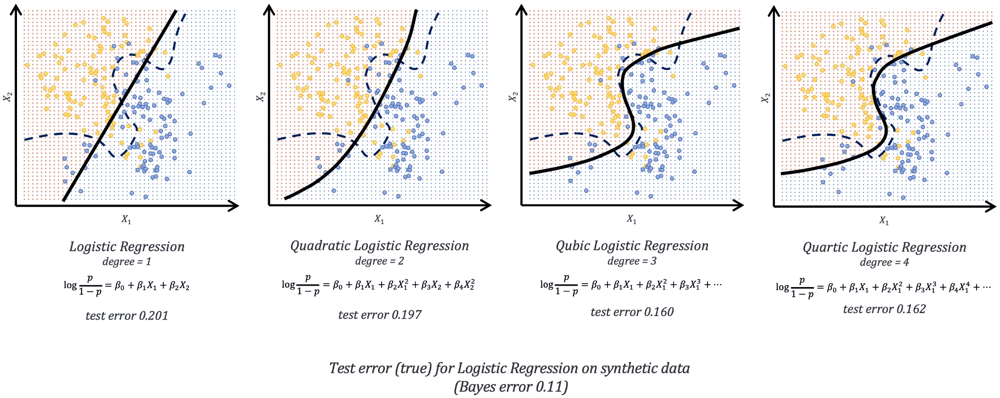
Ví dụ: CV cho Phân lớp

CV sai cách — Ví dụ cảnh báo
Bối cảnh: \(N=50\) mẫu, \(K=2\) lớp; \(p=5000\) đặc trưng Gaussian độc lập hoàn toàn với nhãn.
Lỗi Bayes = 50% — không thể phân lớp tốt hơn đoán ngẫu nhiên.
Thiết lập:
- Không có tín hiệu thật giữa đặc trưng và nhãn.
- Nếu làm đúng, lỗi phải gần 50%.
- Đây là ví dụ để kiểm tra xem CV có đang bị dùng sai không.
Làm sai:
- Chọn 100 đặc trưng trên toàn bộ \(N\) mẫu.
- Dùng 1-NN.
- Sau đó mới chạy CV.
→ CV báo lỗi 3% thay vì 50%!
CV sai cách — Tại sao?
Nguyên nhân: rò rỉ dữ liệu (data leakage)
- Chọn đặc trưng trên toàn bộ dữ liệu → phần dữ liệu dùng để đánh giá đã bị "nhìn".
- CV chia sau bước lọc → fold kiểm định không còn độc lập.
Làm sai — Minh hoạ
Điều gì xảy ra sau bước chọn đặc trưng sai cách?
- Chọn 100 đặc trưng có tương quan cao nhất trên toàn bộ \(N\) mẫu.
- Lấy ngẫu nhiên 10 mẫu.
- Tính tương quan trên 10 mẫu đó.
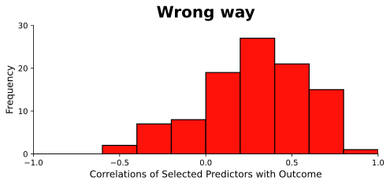
Tương quan trung bình = 28% (thực tế = 0%).
→ Bước chọn đặc trưng đã tạo ra tương quan giả.
Làm đúng — CV cho toàn bộ chuỗi bước
- Chia mẫu thành \(K\) fold.
- Với mỗi \(k=1,\ldots,K\):
- Chọn đặc trưng trên các mẫu ngoài fold \(k\).
- Xây mô hình đa biến.
- Dự đoán nhãn trên fold \(k\).
- Tích lũy lỗi trên tất cả \(K\) fold.
CV phải bao trùm TOÀN BỘ chuỗi bước!
Gom cụm không dùng nhãn: có thể thực hiện trước khi chia fold.
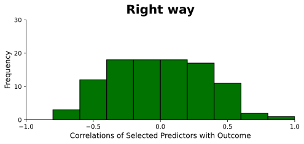
Mô hình Train – Validation – Test
Chia thành ba tập:
- Tập huấn luyện: khớp mô hình.
- Tập kiểm định: chọn mô hình.
- Tập kiểm tra: đánh giá mô hình cuối.
Một cách chia thường gặp: 50% / 25% / 25%.
Kiểm định chéo lồng nhau
(Nested CV)
Mục đích: tối ưu siêu tham số và đánh giá tách biệt nhau.
- CV trong (inner): điều chỉnh siêu tham số.
- CV ngoài (outer): đánh giá hiệu năng cuối.
Ước lượng lỗi thận trọng hơn — tập kiểm tra tách biệt cho từng vòng.

3.
Bootstrap
Bootstrap là gì?
- Dùng để định lượng độ không chắc chắn của một ước lượng.
- Áp dụng được cho mọi phương pháp — kể cả khi không có công thức lý thuyết.
Ví dụ: Ước lượng tỷ lệ đầu tư
Ví dụ: ước lượng tỷ lệ đầu tư tối ưu giữa hai tài sản \(X\) và \(Y\).
- Đầu tư tỷ lệ \(\alpha\) vào \(X\), \(1-\alpha\) vào \(Y\).
- Mục tiêu: chọn \(\alpha\) tối thiểu hoá \(\text{Var}(\alpha X + (1-\alpha)Y)\).
Câu hỏi: \(\hat{\alpha}\) dao động nhiều hay ít khi dữ liệu thay đổi?
Nếu có thể lấy nhiều mẫu mới...
Nếu có thể lấy mẫu nhiều lần từ phân phối thực:
- 1000 ước lượng \(\hat{\alpha}_1, \ldots, \hat{\alpha}_{1000}\).
- \(\bar{\hat{\alpha}} = 0.5972\); \(\widehat{\text{SE}}(\hat{\alpha}) = 0.078\).
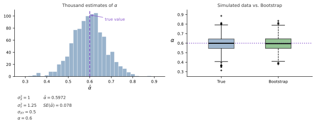
Trái: phân phối 1000 ước lượng \(\hat{\alpha}\) từ lấy mẫu lặp lại. Phải: so sánh phân phối thực và bootstrap.
Bootstrap: lấy mẫu có hoàn lại
Thực tế: không có mẫu mới. Bootstrap bắt chước quá trình đó bằng cách lấy mẫu có hoàn lại từ dữ liệu gốc.
- \(B=1000\) mẫu bootstrap \(Z^{*1}, \ldots, Z^{*B}\), mỗi mẫu có cỡ \(n\).
- \(\widehat{\text{SE}}_B(\hat{\alpha}) = \sqrt{\dfrac{1}{B-1}\sum_{b=1}^{B}\left(\hat{\alpha}^{*b} - \bar{\hat{\alpha}}^*\right)^2}\)
Trái: phân phối 1000 ước lượng \(\hat{\alpha}\) từ lấy mẫu lặp lại. Phải: so sánh phân phối thực và bootstrap.
Ví dụ: Bootstrap
trên tập dữ liệu nhỏ
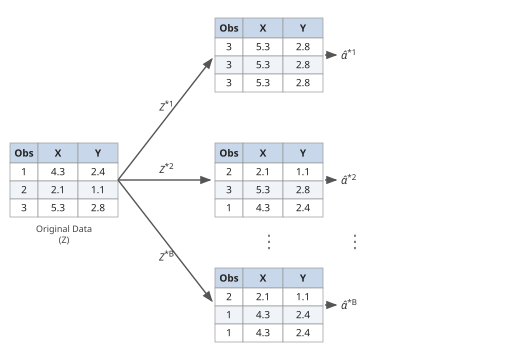
Lấy mẫu lặp lại có hoàn lại từ tập dữ liệu gốc \(Z\) để tạo \(B\) tập bootstrap.
Mẫu ngoài túi (Out-of-Bag)
- Mỗi tập bootstrap ≈ tập con: một số mẫu lặp lại, một số bị bỏ qua.
- Xác suất mẫu \(i\) được chọn: \[ \Pr\{i \in \text{bootstrap } b\} = 1 - \left(1 - \tfrac{1}{n}\right)^n \approx 1 - e^{-1} = 0.632 \]
- ~1/3 dữ liệu không xuất hiện → mẫu ngoài túi (OOB).
- Kiểm tra trên OOB ≈ 3-fold CV.
- Dùng mẫu in-bag để kiểm tra → chồng lấp → ước lượng lỗi quá thấp.
- Các tập bootstrap tương quan cao → phương sai ước lượng lỗi tăng.
Kết luận
- Luôn đánh giá trên dữ liệu độc lập với tập huấn luyện.
- Lấy mẫu lại (resampling): rút mẫu nhiều lần từ dữ liệu hiện có, dùng cho:
- Đánh giá độ biến động của mô hình.
- Đánh giá mô hình (model assessment): ước lượng lỗi tổng quát hoá.
- Lựa chọn mô hình (model selection): tối ưu hiệu năng.
- Có thể tốn kém tính toán — ngày nay chấp nhận được, ngoại trừ Deep Learning.
Khi nào dùng phương pháp nào?
| Tình huống | Phương pháp | Lý do |
|---|---|---|
| Dữ liệu lớn | Phương pháp tập kiểm định | Nhanh, đủ dữ liệu cho cả 3 tập |
| Dữ liệu vừa | Kiểm định chéo k-fold (k = 5–10) | Cân bằng độ chệch – phương sai |
| Dữ liệu nhỏ | LOOCV | Độ chệch thấp nhất |
| Cần khoảng tin cậy | Bootstrap | Định lượng trực tiếp độ không chắc chắn |
| Tối ưu siêu tham số + đánh giá cuối | Kiểm định chéo lồng nhau | Tránh ước lượng lỗi quá thấp |
Tài liệu tham khảo
- James, G., Witten, D., Hastie, T., Tibshirani, R. An Introduction to Statistical Learning (ISLR), 2nd ed., Springer, 2021.
- Hastie, T., Tibshirani, R., Friedman, J. The Elements of Statistical Learning (ESL), 2nd ed., Springer, 2009.
- Muandet, K. & Vreeken, J., Lecture slides, Saarland University.